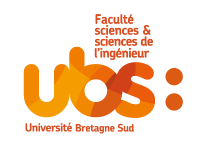

Menu
Menu

Je suis Hoel JANNIN, un étudiant motivé de 18 ans. J'habite dans la campagne de Plouay dans le Morbihan (56).
Depuis que je suis jeune je suis attiré par la nature et la culture Bretonne. Je me suis mis à m'interesser au domaine de la robotique et de l'informatique durant les cours de Technologies au collège. J'ai passé de nombreuses heures à cet âge là à créer des mini-projets en essayant de construire mon propre jeu-vidéo.
En seconde j'ai participé à l'option Robotics 2.0 ce qui m'a permit de découvrir plus en profondeur mes envies pour mon futur métier. J'ai entendu parler cette année là de l'ENSIBS alors j'ai voulu écouvrir le site de Vannes, orienté plus sur le domaine de l'informatique. Durant les portes ouvertes de mes trois années de lycée, j'ai pu devenir grandement interressé par les domaines cyber et notament la fillière Cyberdéfense.
À la maison, j'ai grandi entouré d'animaux de la ferme, d'animaux domestiques et d'animaux sauvages. Bien que mes parents ne soient pas fermiers, notre environnement nous a permit d'adopter de nombreux animaux tels que des ânes ou des chêvres.
De plus j'ai grandi avec un grand frère de 21 ans et un petit frère de 14 ans ce qui m'a permit d'avoir une enfance heureuse.
Je me suis interressé très tôt à la musique et à partir de 7 ans j'ai pu choisir mon instrument de musique : La Batterie. Cela fait plus de 13 ans que je suis au sein de l'école de musique de Plouay et je suis actuellement en troisième cycle de batterie. Je suis actuellement sur un morceau considéré comme très compliqué du groupe Tool dans l'objectif de le représenter en publique lors de la fête de la musique.
Au-delà de ma pratique musicale, la musique est pour moi un refuge très important qui me passionne énormement.
Depuis l'âge de trois ans j'ai pratiqué divers sports en club. De la gymnastique, du caraté et même 9 ans de basket au sein des "Écureuils de Plouay". Enfin au collège je me mets serieusement à la course à pied et notament au trail. Suite à mon premier salaire, je finance l'achat d'un vélo de course et deviens pleinement cycliste.
Je me considère aujourd'hui comme une personne athlétique et polyvalente qui pratique le cyclisme allant jusqu'à 200 km, la course à pied, le trail, l'hyrox et du renforcement musculaire.
Les sports d'endurence que je pratique m'ont beaucoup aidé à évoluer mentalement et à devenir la personne que je suis aujourd'hui.
 07 68 60 15 23
07 68 60 15 23
hoeljannin@gmail.com
 linkedin.com/in/hoel-jannin
linkedin.com/in/hoel-jannin
